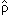

Постулаты квантовой механики (для чистых состояний)
Теорема о невозможности клонирования произвольного чистого состояния
Первооткрыватели "No-cloning theorem"
Совместное клонирование ортогональных состояний
Теорема о невозможности уничтожения копии произвольного чистого
состояния
Люди, доказавшие "No-deleting theorem"
Правила суперотбора
Часть 2. МАТРИЦА ПЛОТНОСТИ: ОСНОВНЫЕ СВОЙСТВА
Смешанные состояния
Матрица плотности чистого состояния
Как строить матрицу плотности чистого состояния |ψ>?
Матрица плотности смешанного состояния
Примеры матриц плотности
"Отцы" матрицы плотности
Неоднозначность разложения матрицы плотности смешанного состояния на
чистые
Нерелятивистская матрица плотности спина s = 1/2
Теорема Глизона (1957 г.)
Количественное сравнение квантовых состояний
Как найти F1(А,
В)?
Как найти DTr{А,
В)?
Пример вычисления F1(А,
В)
и DTr{А,
В)
Пример вычисления остальных степеней совпадения и метрик
Матрица плотности составной системы
Запутанные состояния
Квантовое происхождение вероятностей Wℓ
Клонирование помогает запутанности?
Матрица плотности и постулаты квантовой механики
Факторизация матрицы плотности
Разложение Шмидта
Число Шмидта и запутанные состояния
Разложение Шмидта для трех и более подсистем
Состояния Белла (the Bell states)
Необходимое условие сепарабельности А.Переса
А.Перес и клан Городецких
Состояние Вернера и критерий сепарабельности Переса
Редукционное условие сепарабельности
Состояние Вернера и редукционный критерий
Часть 3. ФОРМУЛА ФОН НЕЙМАНА И ЕЕ СЛЕДСТВИЯ
Условная матрица плотности и формула фон Неймана
Редукция матрицы плотности и парадокс друга Вигнера
Проекционный постулат М.Борна и проекционный постулат Дирака - фон
Неймана
Постулат о среднем значении операторов
Модель измерения по фон Нейману
Локальность нерелятивистской квантовой механики на макроскопическом
уровне и теорема Эберхарда
Суперпозиция или смесь!
Альтернатива принципу суперпозиции
Часть 4. ЭВОЛЮЦИЯ КВАНТОВОЙ СИСТЕМЫ ВО ВРЕМЕНИ
Эволюция матрицы плотности во времени. Квантовое
уравнение Лиувилля (уравнение фон Неймана)
Решение квантового уравнения Лиувилля
Важный частный случай
Уравнение Блоха
Обобщенная формула фон Неймана
Квантовый парадокс Зенона
Производная оператора по времени для смешанных состояний
Квантовое уравнение Лиувилля в координатном представлении
Матрица плотности свободной частицы
Часть 5. ОПИСАНИЕ ОТКРЫТЫХ КВАНТОВЫХ СИСТЕМ
Распад нестабильной микросистемы
Квантовое уравнение Лиувилля для открытых систем
Эволюция матрицы плотности открытых квантовых систем. Общий подход
Операторы Крауса и представление Крауса для матрицы плотности
открытой квантовой системы
Уравнение Линдблада
Как работает уравнением Линдблада. Простой пример
Уравнением Линдблада для наблюдаемых в представлении Гейзенберга
Релаксационное уравнение для частицы в термостате
Часть 6. ОСНОВЫ КЛАССИЧЕСКОЙ ТЕОРИИ ИНФОРМАЦИИ
Классическая энтропия. Биты и наты
Энтропия и информация
Декогеренция и парадокс кота Шредингера
Граница между мирами
Ограничения на величину шенноновской энтропии
Двоичная энтропия
Неравенство Йенсена и вогнутость энтропии Шеннона
Классическая относительная энтропия и неравенство Гиббса
Классическая совместная энтропия и субаддитивность
Условная вероятность и теорема Байеса
Классическая условная энтропия
Доказательство субаддитивности
Классическая взаимная информация
Наглядная связь между различными энтропиями и взаимной информацией
Сильная субаддитивность
Часть 7. ОСНОВЫ КВАНТОВОЙ ТЕОРИИ ИНФОРМАЦИИ
Квантовая энтропия (энтропия фон Неймана)
Ограничения на величину энтропии фон Неймана
Энтропия чистого состояния
Гипотеза о скрытых параметрах
Тример вычисления энтропии смешанного состояния
Сравнение квантовой и классической энтропии
Квантовая относительная энтропия и неравенство Клейна
Квантовая совместная энтропия и субаддитивность
Свойство субаддитивности для состояния Вернера
Субаддитивность и второе начало термодинамики
Квантовая взаимная информация
Неравенство треугольника (неравенство Араки-Либа)
Вогнутость квантовой энтропии
Теорема о невозможности клонирования произвольного смешанного
состояния
Часть 8. НЕРАВЕНСТВА БЕЛЛА И КОРРЕЛЯЦИИ В КВАНТОВОЙ ТЕОРИИ
Одновременная измеримость и неизмеримость
Понятие об элементах физической реальности
Неравенств Белла. Историческая справка
Неравенств Белла. Основная идея
Простой вывод CHSH-неравенства
Вывод CHSH-неравенства из условия неотрицательности совместных
вероятностей
Граница Цирельсона
Запутанные состояния вступают в игру
А теперь - пресловутая нелокальность!
CHSH-неравенство и сепарабельные состояния
Носки профессора Бертлмана, запутанность и CHSH-неравенство
Видео лекций
Матрица плотности. Вводный курс
Обратная связь с автором
Мне очень хотелось сделать интересный и современный курс,
который
бы показал студентам красоту и глубину квантовой теории. Удалось это
или нет, судить слушателям и читателям (почти уверен, что курс будет
гулять "по интернетам"). Очевидно, что написать столько текста и не
сделать ни одной ошибки в формулах или опечатки в словах абсолютно
невозможно. Поэтому у меня просьба, если кто найдет ошибку, опечатку
или, упаси боже, "дырку" в доказательстве какого-либо утверждения,
свяжитесь пожалуйста с автором по e-mail и сообщите ему о своей
находке. Вознаграждение не предлагаю. :)
Если у кого-то возникнут пожелания, какие еще интересные
вопросы можно было бы включить в курс, я с удовольствием рассмотрю
эти предложения (но не обещаю, что приму).
e-mail для связи 679nik@mail.ru,
в теме письма просьба указать "Обсуждение лекций по матрице
плотности", чтобы мне было легче находить соответствующие сообщения.
P.S. Работы, опровергающие квантовую физику и теорию
относительности, не рассматриваю. Дискуссии на эти темы не веду.